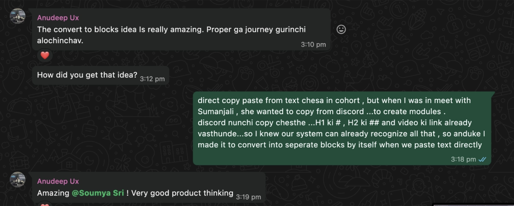
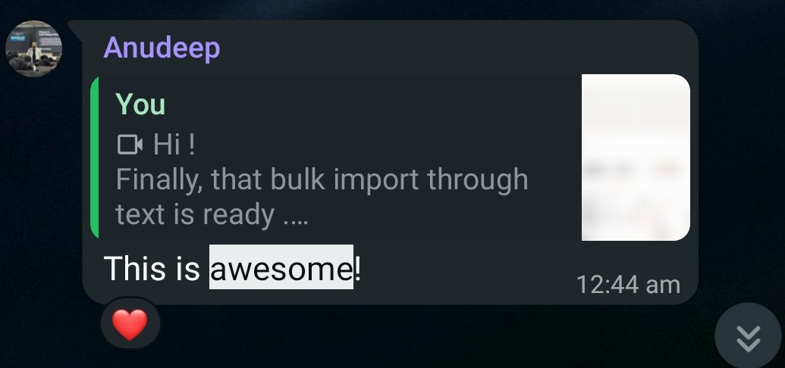
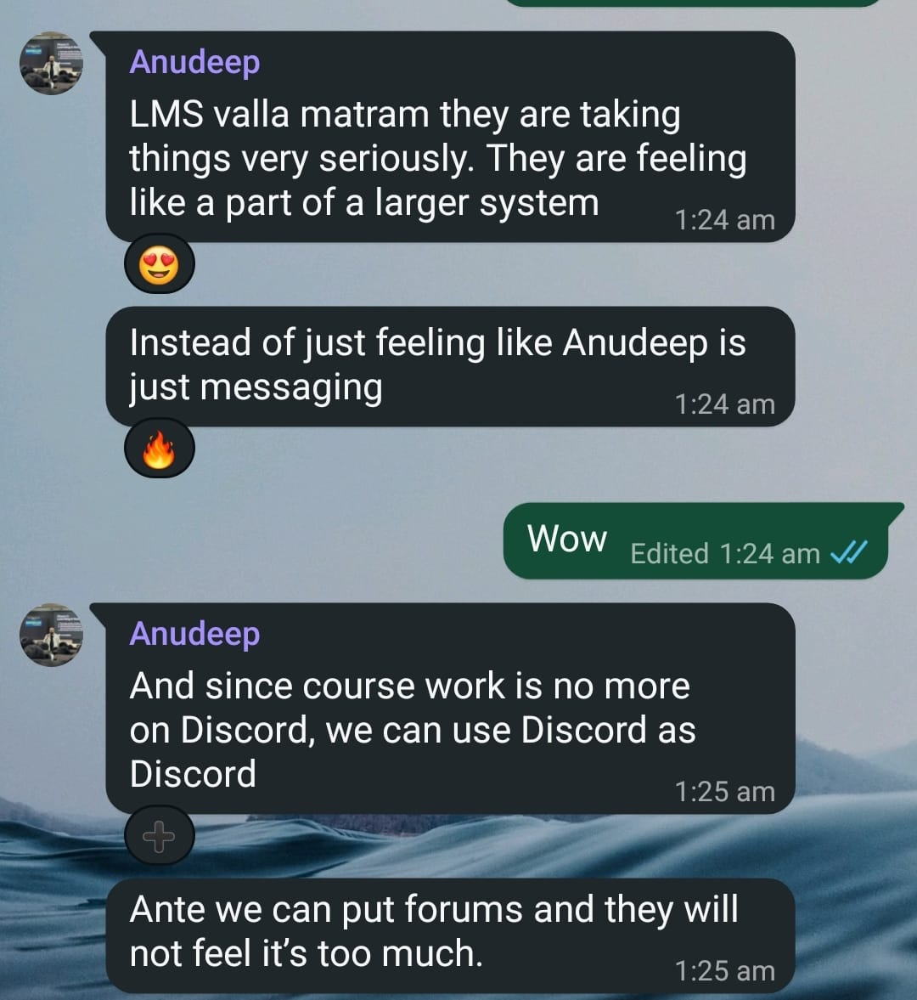

Product designer who codes
Designer at heart, developer at night.
I design every screen and write the code.
You get back a product you can run without me.
UX Gym live now
Learning platform · 0 → 1 · designed and built solo
300+students · 3 cohorts
Tata Steel 2021 to 2024
Guest house system, Work Delegation system · 0 → 1 · designed and built solo
Three years there, as a designer and a developer.
30,000people a year
→ Keep scrolling
Client work · UX Gym
I built it so the client can run multiple cohorts in parallel instead of a single one. It is a dynamic tool: the client adds modules, manages students and opens cohorts himself, no developer needed, and parts of it are made for AI.
Client · UX Anudeep · Founder, UX Gym · ex Amazon · mentored 5,000+ designers



A happy client.
Anudeep's messages while the LMS was being built, exactly as they arrived.
Bringing the founder's vision into reality, turning the lessons into interactive drills. So nothing feels like a textbook.
The mega launch of the AI UX course. I designed and built the whole four day live event, and it increased customer acquisition by 25%.
→ Say hello below
Open to new work